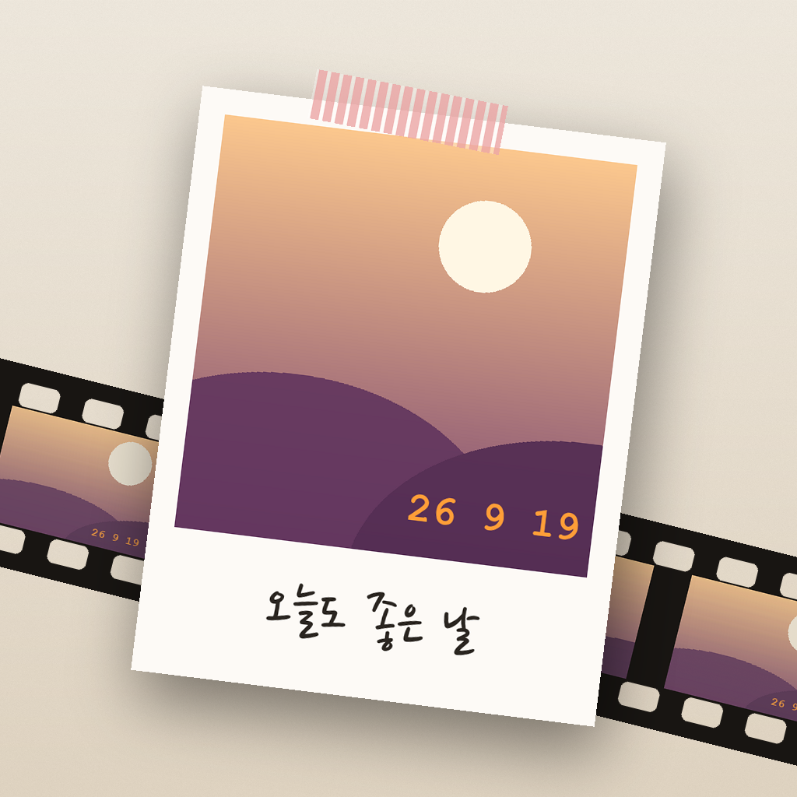
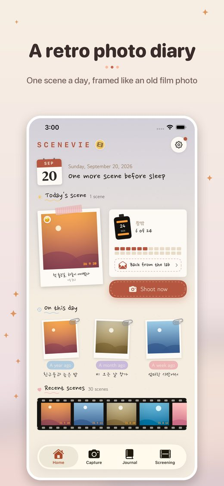
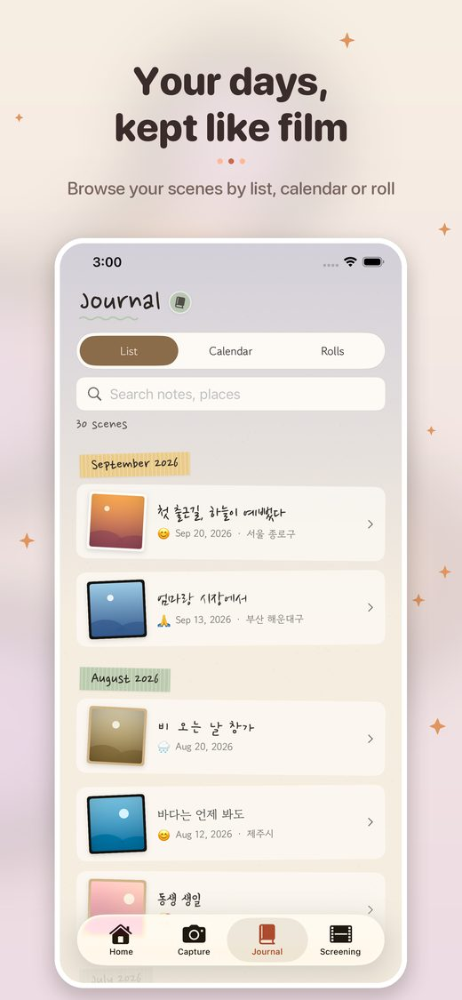
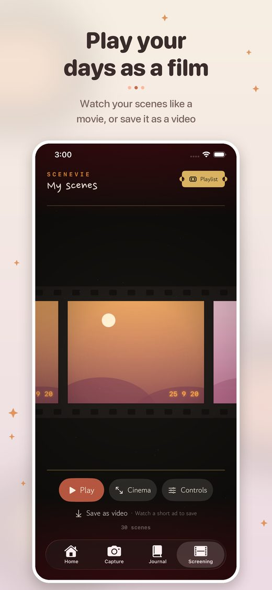

A retro photo diary, one scene a day
Get it on the App Store


One scene a day, framed like an old film photo
Browse your scenes by list, calendar or roll
Watch your scenes like a movie, or save it as a video
Free, with ads. No account needed.